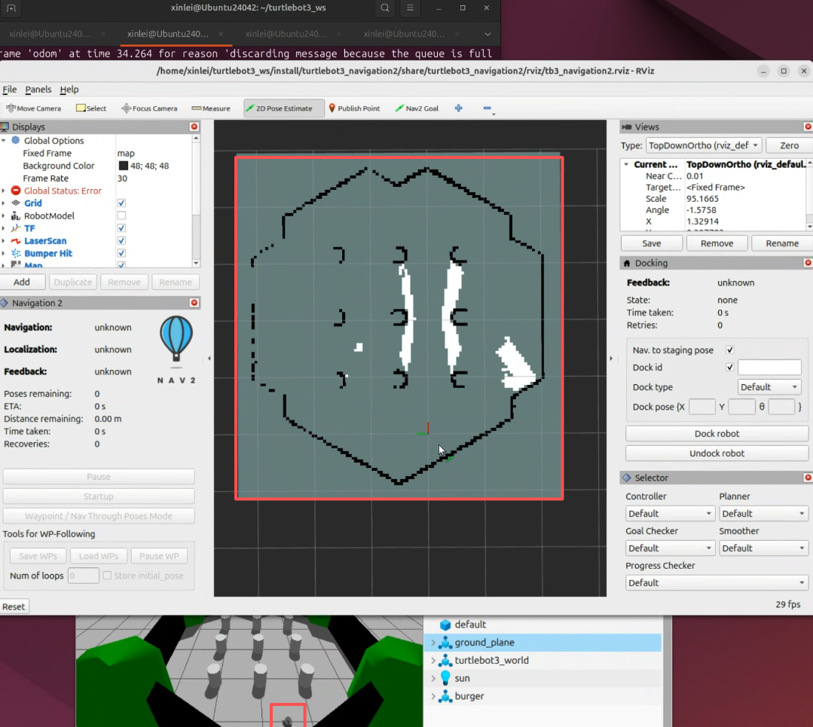
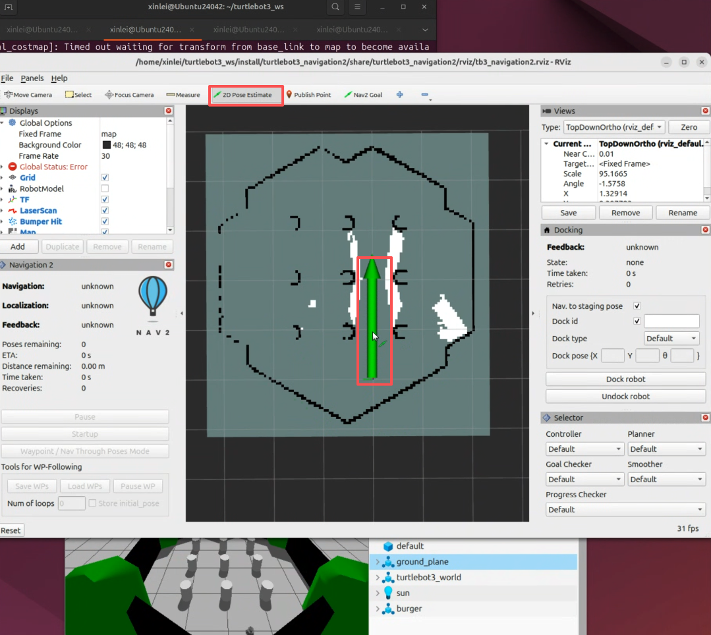
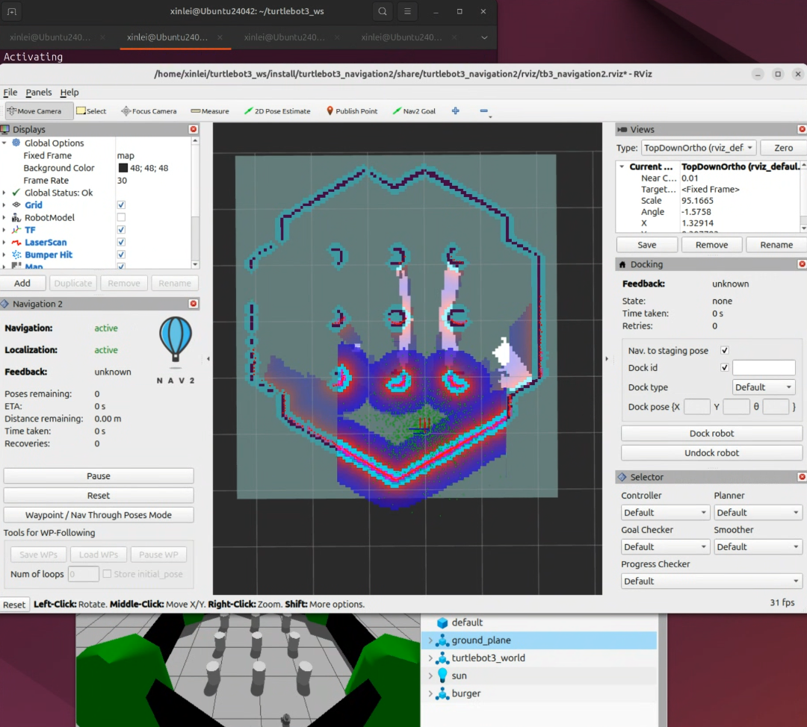
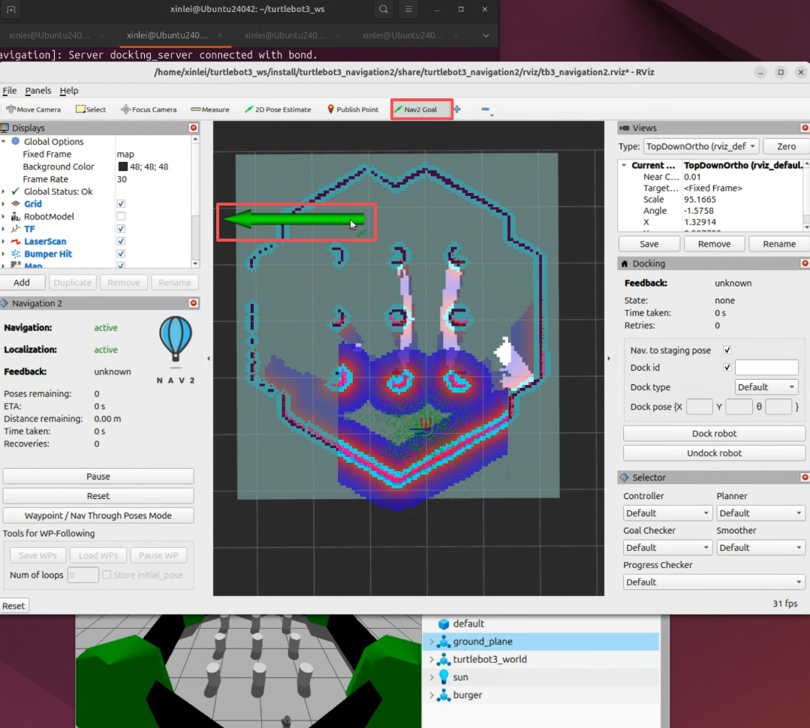
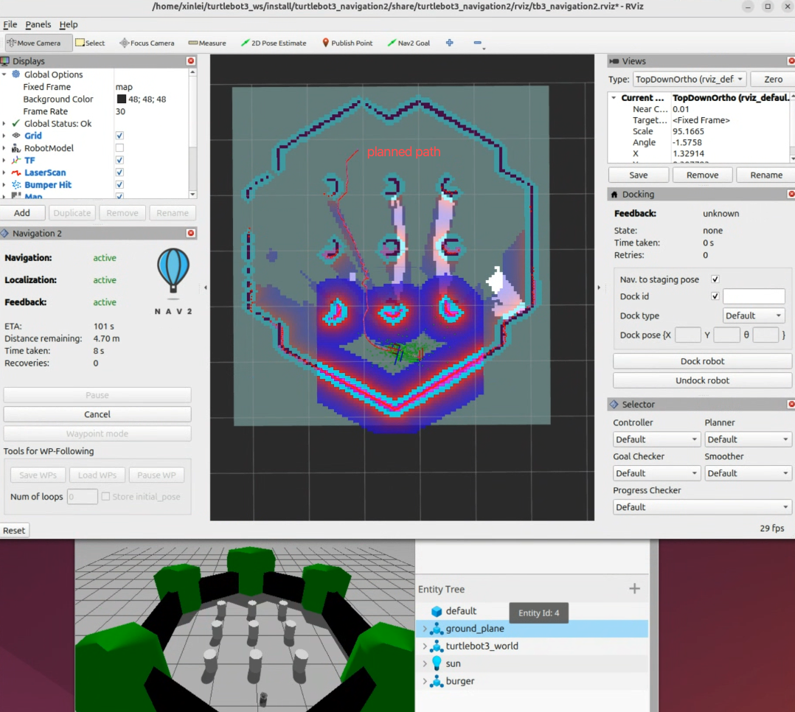

Navigation
The following steps take approximately 30 minutes to complete.
Before proceeding, make sure you have completed the previous sections.
The following steps are based on the official Turtlebot3 documentation at https://emanual.robotis.com/docs/en/platform/turtlebot3/nav_simulation/. Refer to their website for more details.
In the previous section, we built an environment map from laser scan data. With this map, the robot can localize itself. In this section, we will use that same map to enable autonomous navigation.
Step 1: Launch the Simulator
Open a terminal tab and run the command below to launch the simulator and spawn the mobile robot. You can substitute this with the house environment command from the previous section for additional practice, but for now please follow this guide first.
$ ros2 launch turtlebot3_gazebo turtlebot3_world.launch.pyStep 2: Launch Autonomous Navigation
This time, instead of teleoperation, we will launch the autonomous navigation stack. Run the command below in a new terminal tab. If you saved your map with a different filename in the previous section, update map.yaml in the command accordingly.
$ ros2 launch turtlebot3_navigation2 navigation2.launch.py use_sim_time:=True map:=$HOME/map.yamlThis command launches the visualization tool again, as shown below. Notice that the displayed map may appear incomplete — the white areas indicate regions that were not fully explored during the SLAM step.

Next, we need to provide the robot with an initial pose estimate. As shown in the figure below, click the 2D Pose Estimate button in the top toolbar, then click on the map at approximately where the robot is located and drag the green arrow to match the robot's orientation. This gives the robot a rough starting position, after which it runs the AMCL localization algorithm to precisely determine its pose using the laser scan data.

Once the robot has localized itself, the visualization will stabilize and display a color-coded costmap. The colors represent the navigation cost at each location — areas closer to obstacles appear more intense, indicating higher risk of collision, which the robot will actively avoid during navigation.

You are now ready to set a navigation goal. Click the Nav2 Goal button in the top toolbar, then click on your desired target position in the map and drag the green arrow to specify the target orientation, as shown below.

Once the goal is set, the navigation algorithm plans a path (shown as the red line in the figure below) and computes control commands to drive the robot along the planned path toward the target position and orientation.

You now know how to autonomously navigate a robot in a mapped environment!
Additional: Navigation in Other Environments
Repeat the steps above with two differences. First, replace the Step 1 command with the one below to launch the house environment.
$ ros2 launch turtlebot3_gazebo turtlebot3_house.launch.pySecond, update the map filename in the Step 2 command to match the map you saved for the house environment.